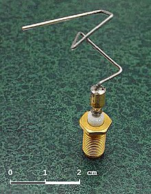

Evolutionary Computation
Overview
Evolutionary Algorithm

Same pattern for (almost) all evolutionary methods
Examples
Historical perspective
- Evolutionary Strategies
- developed by Rechenberg, Schwefel, etc. in 1960s
- focus: real-valued parameter optimization
- Evolutionary Programming
- developed by Fogel et al in 1960s
- focus: evolve intelligent behavior with Finite State Machines
- Genetic Algorithms
- developed by Holland in 1960s
- focus: robust, adaptive systems, reproduction via mutation and recombination
- Genetic Programming
- developed by Koza in 1988
- focus: evolution of programs
Applications
- Software design
- Robotics and hardware design
- Biology and bioinformatics
- Management, scheduling
- Economics, trading systems
- and more

Well-known algorithms
- CMA-ES
- Covariance Matrix Adaptation Evolutionary Strategy
- Continuous optimization
- Tutorial 2
- NSGA-II
- Non-dominated Sorting Genetic Algorithm II
- Multi-objective optimization
- Tutorial 3
- NEAT
- Neuroevolution of Augmenting Topologies
- Evolution of neural networks
- Tutorial 5
- MAP-Elites
- Illuminating Search Spaces by Mapping Elites
- Evolution of behavior
- Tutorial 6
Resources
Evolutionary computation methods in many languages
- ECJ: very mature, general framework, Java
- GPLAB: genetic programming, MATLAB
- Optimization Toolbox: implements genetic algorithm, MATLAB
- pycma: CMA-ES, Python
- BEAGLE: framework, C++
- MABE: new framework, C++
- eaopt: new generic, Go
and many many more
Not in this class
- Estimation of distribution algorithms
- Evolutionary Programming
- Artificial Immune Systems
- Learning Classifier Systems
- Surrogate models
- Swarm intelligence
- Particle Swarm Optimization
- Simulated annealing
GECCO (Genetic and Evolutionary Computation Conference) Proceedings include excellent tutorials
Exercise
No exercise!
Look at links from this presentation, watch the videos